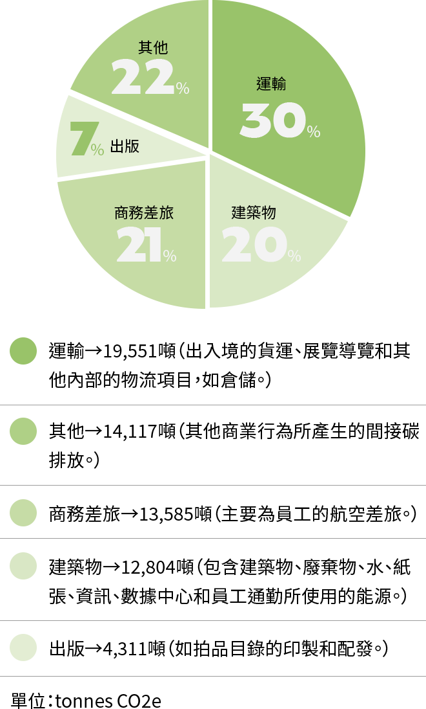

國際動態
國際動態
視覺藝術VISUAL ART
藝術拍賣加入綠色產業行列
佳士得2019年碳排放量分布――

2020年成功減少80%出版品製作的佳士得，未來如何透過基礎建設更新及推動營運轉型，降低運輸、建築物、商務差旅等碳排將是減碳關鍵。
國際藝術拍賣龍頭佳士得(Christie's)於2021年7月首次公布集團的年度碳排放量，並宣示遵循「科學基礎減量目標倡議」(SBTi)，承諾將減少碳排50%，於 2030年以前達到淨零排放(Net Zero)。在2021年全 球拍賣市場取得43%市占的佳士得，是全球2,356間響應SBTi公司中唯一的藝術拍賣行。
碳排調查ㅤ邁向綠色產業的第一步
報吿指出，2019年佳士得共排放64,368噸的碳。 30 其中直接碳排和使用能源所產生的間接排放，共產生50,252噸的二氧化碳當量(CO2e)，而其他商業行為所產生的間接碳排，如顧 問費和保險所造成的間接排放(範圍三 )，則約有14,117噸二氧化碳當量。若要達成宣示目標，佳士得需以2019年碳排數據為基準，減少範圍一和範圍二80%以及範圍三46%的排放量。
佳士得同時在報吿中宣布於全球據點推動減碳計畫，包括於建築空間使用再生能源，制訂中長期計畫更新基礎建設，以降低潛在碳排;利用海、陸運取代空運;使用環保包材和重複使用紙箱等。同時進行數位轉型，減少拍賣型錄等出版品印製;減少商業差旅，以更永續的方式維繫客戶或股東關係。
而2020年年度出版品已達減量80%，超出原先設定的75% ，顯示數位轉型計畫在疫情期間極端的商業環境下被加速進，並找到集團與客戶端都可接受的模式。
碳排分析有助於公司營運模式之優化
相較於化工、建築業等業種，藝術拍賣產業並非碳排大戶，然而佳士得製作環境影響報吿，揭露集團碳排狀況，並提出基礎建設更新及營運轉型計畫，在各國碳排管制政策及相關財稅制度逐步常軌化的趨勢下，能為集團提供更完善的財稅保障及尋求更好的金融資源，進而創造低碳的新商業模式 。
洪婉馨藝術史出身的前世編輯，Otto Dix、席德進(
水墨)愛好者，致力於集滿全球藝術展會及美術館／博物館。聯絡方式：whh@taicca.tw